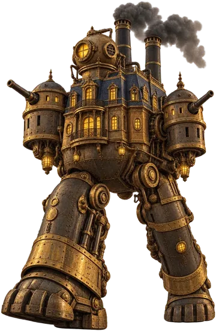
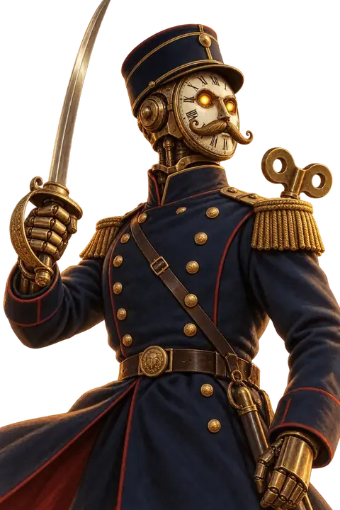
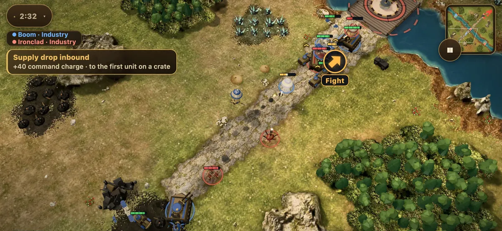
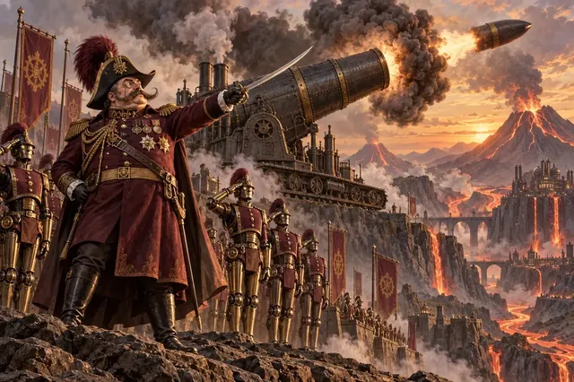
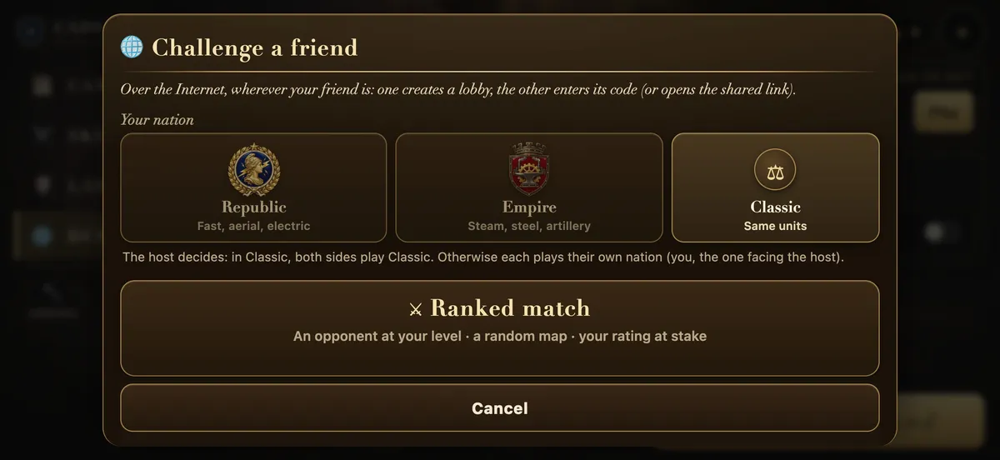
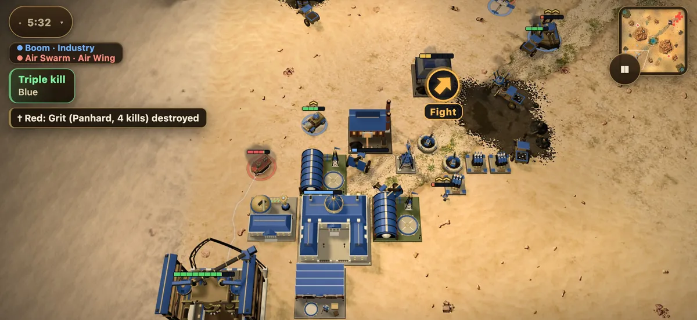
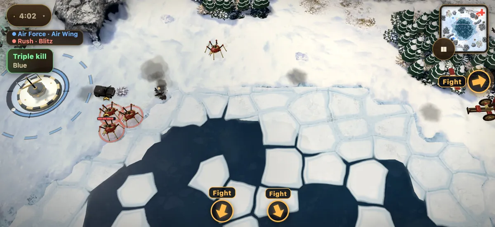
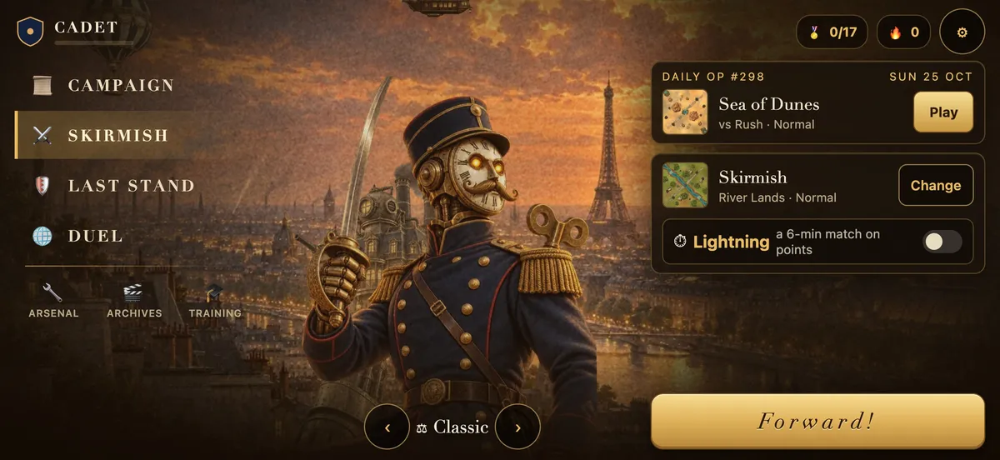

The Republic
Liberty, electricity, daring
Fast, airborne and electric: Blériot planes and balloons, Branly guns, electric sappers. It strikes fast and far.


The Cinématographe presents
Europe arms herself with steam, steel and radium. Lead your armies with a fingertip, through a three-act campaign or against an opponent online.
Free · No ads · No in-app purchases · iPhone, Android and desktop
To win it, you’ll need courage…
and a great deal of panache.
Battle at your fingertip
No mouse to fake and no tiny buttons: everything is done with a finger, and a match fits in a metro ride.

Tap a unit, circle a regiment or take the whole army at once.
Draw your troops’ path on the map: they follow it, flank and charge.
Build, mine coal, launch the assault: a skirmish takes ten minutes, an Éclair six.
Two nations
Each nation has its own units, buildings and way to win.
Liberty, electricity, daring
Fast, airborne and electric: Blériot planes and balloons, Branly guns, electric sappers. It strikes fast and far.
Steam, steel, artillery
Heavy and relentless: armoured Creusots, 280 mm mortars, cast-iron Gargantuas. It advances slowly, but nothing stops it.
Or Classic mode: both sides field the same units, on equal terms.
The 1900 Campaign
Intertitles, film grain, a brass fanfare: each mission opens and closes on its cards, and your arsenal grows from one to the next.
Bridgeheads, radium caravans, granite coasts: the war begins.

Meanwhile, in Carbonia… The war climbs into the mountains.
It all comes down to Mr Eiffel’s tower.
Online duels
Both phones play the same battle, order for order, wherever you are.

And also
Against the AI, with three difficulties and several commander personalities.
A six-minute match, won on points.
Hold out as long as you can against the waves.
A new battle every day, the same for everyone.
Gold rush, glass cannons… and endless generated maps.
Watch your battles and their highlights again, in slow motion.
At the front



Yes. No ads, no in-app purchases, no subscription. The whole game is free to play.
iPhone, Android and desktop, right in the browser, with nothing to install. An iPhone app is coming to the App Store.
No. The game creates an anonymous account by itself to save your progress in the cloud. You can link it to Sign in with Apple to pick it up on your other devices.
Duel → Create a lobby, then send the four-letter code or the link. Your friend joins from their phone, wherever they are.
Once loaded, the game runs without a connection for the campaign, skirmishes and Last Stand. Only online duels and the ladder need the internet.
No personal data: no name, no email. Only your progress, your ranked rating and anonymous counters. It is all detailed in the privacy policy.